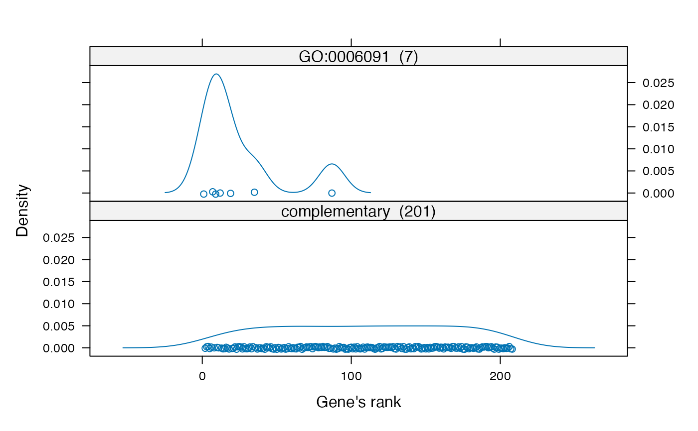
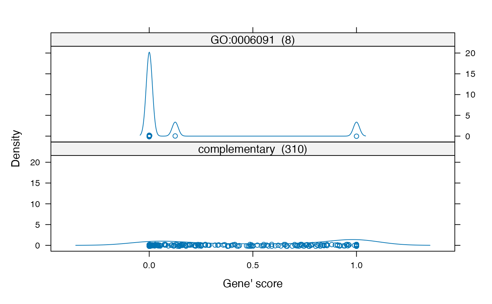

diagnosticMethods.RdThe GenTable function generates a summary of the
results of the enrichment analysis.
The showGroupDensity function plots the distributions of the
gene' scores/ranks inside a GO term.
The printGenes function shows a short summary of the top genes annotated
to the specified GO terms.
GenTable(object, ...)
showGroupDensity(object, whichGO, ranks = FALSE, rm.one = TRUE)
printGenes(object, whichTerms, file, ...)an object of class topGOdata.
the GO terms for which the plot should be generated.
if ranks should be used instead of scores.
the p-values which are 1 are removed.
character vector listing the GO terms for which the summary should be printed.
character string specifying the file in which the results should be printed.
Extra arguments for GenTable can be:
one or more objects of class topGOresult.
orderByif more than one topGOresult object is given then
orderBy gives the index of which scores will be
used to order the resulting table. Can be an integer index
or a character vector given the name of the topGOresult
object.
ranksOfsame as orderBy argument except that this parameter shows
the relative ranks of the specified result.
topNodesthe number of top GO terms to be included in the table.
numCharthe GO term definition will be truncated such that only
the first numChar characters are shown.
Extra arguments for printGenes can be:
chipcharacter string containing the name of the Bioconductor annotation package for a microarray chip.
numCharthe gene description is trimmed such that it has
numChar characters.
simplifylogical variable affecting how the results are returned.
geneCutOffthe maximal number of genes shown for each term.
pvalCutOffonly the genes with a p-value less than pvalCutOff are shown.
oneFileif TRUE then a file for each GO term is generated.
GenTable is an easy to use function for summarising the most
significant GO terms and the corresponding p-values. The function
dispatches for topGOdata and topGOresult objects, and
it can take an arbitrary number of the later, making comparison
between various results easier.
Note: One needs to type the complete attribute names (the exact name)
of this function, like: topNodes = 5, rankOf = "resultFis", etc.
This being the price paid for flexibility of specifying different
number of topGOdata objects.
The showGroupDensity function analyse the distribution of the
gene-wise scores for a specified GO term.
The function will show the distribution of the genes in a GO term
compared with the complementary set, using a lattice plot.
printGenes
The function will generate a table with all the probes annotated to
the specified GO term. Various type of identifiers, the gene name and
the gene-wise statistics are provided in the table.
One or more GO identifiers can be given to the function using the
whichTerms argument. When more than one GO is specified, the
function returns a list of data.frames, otherwise only one
data.frame is returned.
The function has a argument file which, when specified, will
save the results into a file using the CSV format.
For the moment the function will work only when the chip used has an annotation package available in Bioconductor. It will not work with other type of custom annotations.
A data.frame or a list of data.frames.
data(GOdata)
########################################
## GenTable
########################################
## load two topGOresult sample objects: resultFisher and resultKS
data(results.tGO)
## generate the result of Fisher's exact test
sig.tab <- GenTable(GOdata, Fis = resultFisher, topNodes = 20)
## results of both test
sig.tab <- GenTable(GOdata, resultFisher, resultKS, topNodes = 20)
## results of both test with specified names
sig.tab <- GenTable(GOdata, Fis = resultFisher, KS = resultKS, topNodes = 20)
## results of both test with specified names and specified ordering
sig.tab <- GenTable(GOdata, Fis = resultFisher,
KS = resultKS, orderBy = "KS",
ranksOf = "Fis", topNodes = 20)
########################################
## showGroupDensity
########################################
goID <- "GO:0006091"
print(showGroupDensity(GOdata, goID, ranks = TRUE))

print(showGroupDensity(GOdata, goID, ranks = FALSE, rm.one = FALSE))

########################################
## printGenes
########################################
if (FALSE) { # \dontrun{
library(hgu95av2.db)
goID <- "GO:0006629"
gt <- printGenes(GOdata, whichTerms = goID, chip = "hgu95av2.db", numChar = 40)
goIDs <- c("GO:0006629", "GO:0007076")
gt <- printGenes(GOdata, whichTerms = goIDs, chip = "hgu95av2.db", pvalCutOff = 0.01)
gt[goIDs[1]]
} # }